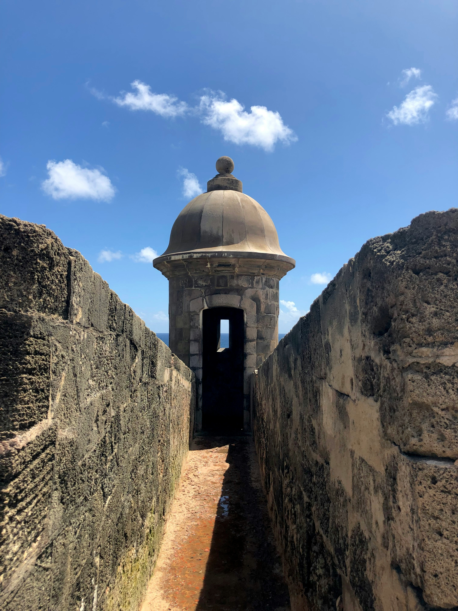
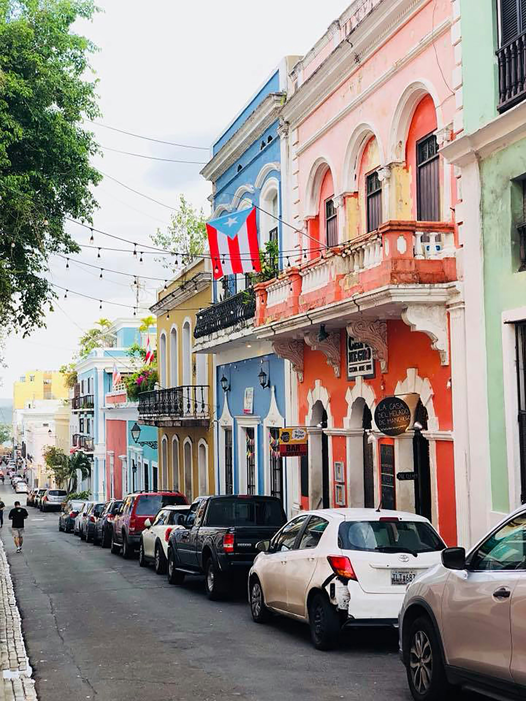
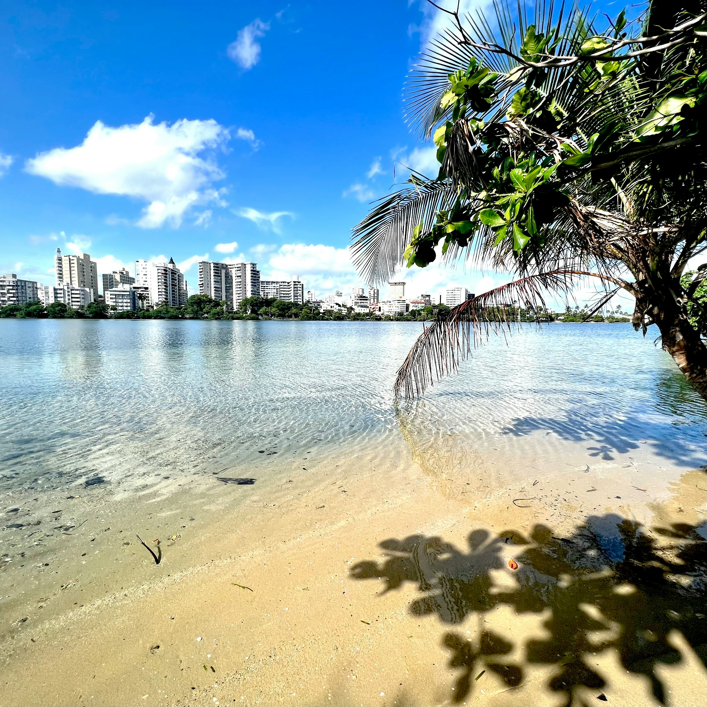

Explore San Juan, Puerto Rico
A Caribbean gem with 500 years of history, vibrant culture, and stunning beaches.
About San Juan
San Juan is the vibrant capital and cultural heart of Puerto Rico. Founded in 1521, it is one of the oldest European-established cities in the Americas, blending Spanish colonial architecture with modern Caribbean energy.
The city is famous for Old San Juan's colorful buildings, cobblestone streets, and historic forts like Castillo San Felipe del Morro. Visitors enjoy beautiful beaches, lively music, rich cuisine, and a unique mix of Spanish, African, and Taíno influences.
Top Attractions

El Morro

Old San Juan

Condado Beach